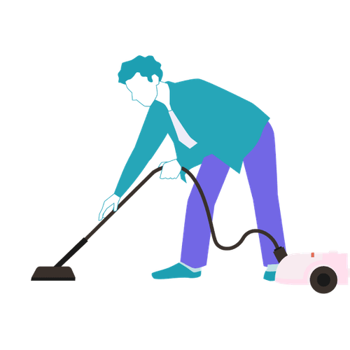

Mit der Academy erhaltet ihr im Business-Plan praxisnahe Lernmodule rund um Facilitation und wirksame Transformation.
Gemeinsam mit 9 Spaces zeigt Plan International Deutschland, wie wertebasiertes Arbeiten Orientierung gibt – nach innen wie nach außen.

Dieses Tool gibt euch einen Rahmen, um Reibungen und Konflikte frühzeitig anzusprechen und aus der Welt zu schaffen.
So meisterst du schwierige Gespräche, ohne dass es kracht.
Manche Konflikte können wir nur schwer in Worte fassen. Unser Tool hilft dabei, gemeinsam zu verstehen, worum es wirklich geht.
Ein Tool, das dir dabei hilft, zu reflektieren, wie du kommunizierst